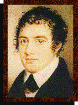
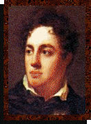
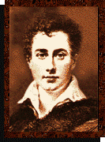
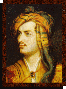
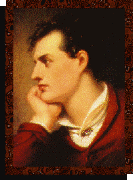

Byronic Portrait
Gallery
Portraits
of
The Regency Poet Lord Byron
| |
|
|
|  |
"My Poor
Brother"
Miniature by an anonymous artist, circa 1805.
Given by Byron to his half-sister Augusta "on my birthday"
|
|  |
Portrait of the
Poet Lord Byron, 1810.
By Sanders.
|
|  |
Byron.
Miniature by Sanders, circa 1812
|
|  |
George Gordon, 6th Baron Byron.
By Thomas Phillips, circa. 1812.
|
|  |
George Gordon,
6th Baron Byron.
By Westall, 1813
|
|